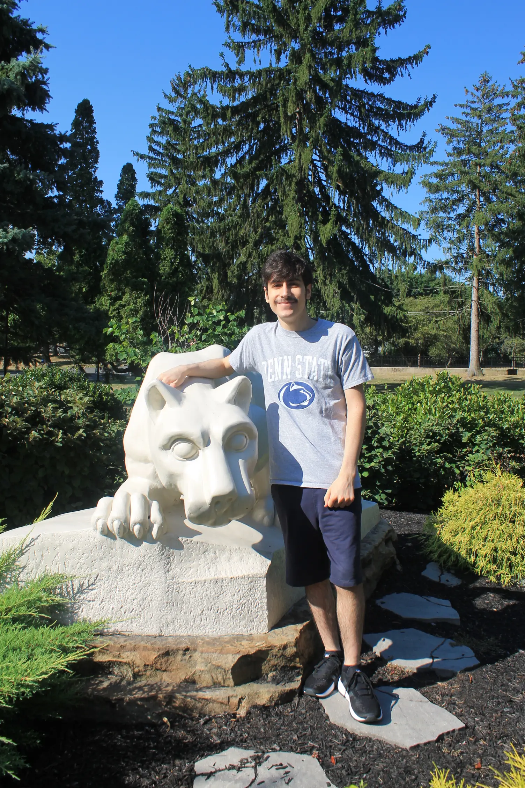

I’m a Cybersecurity graduate with a curiosity for how computers and systems work. Since I was young, I’ve enjoyed exploring system settings, troubleshooting issues, and learning how to optimize and secure technology.
This portfolio showcases the skills and projects I’ve built along the way.
Web design inspired by this website.
If you are looking for my LinkedIn page, click here.